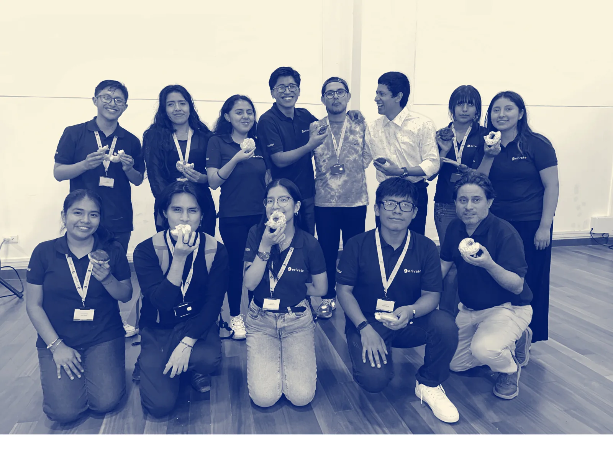
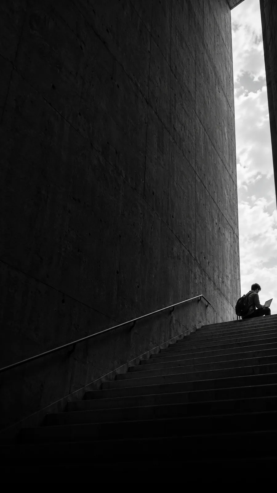
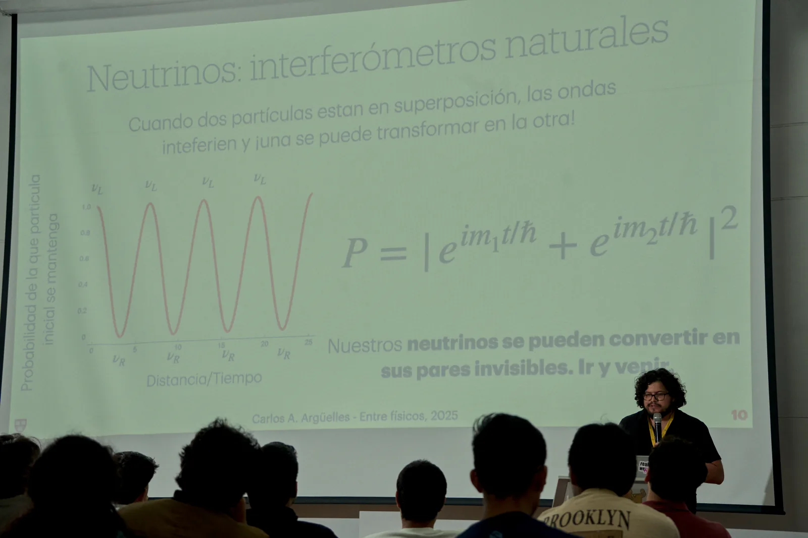

Un camino compartido.
Mentoría entre pares y seguimiento para sostener el ritmo, hacer preguntas y avanzar con apoyo.
Una comunidad de Física en Perú
Ideas en muchasSomos una comunidad de Física. Hacemos preguntas, compartimos lo que sabemos y nos acompañamos en el camino de aprender e investigar.

Ciencia que empieza
con una conversación.
De las aulas a las primeras
preguntas de investigación.

CONVOCATORIA ABIERTASummer
Sprint 2027.
Una convocatoria para estudiantes de Física. Desarrolla un proyecto de investigación con la guía de un mentor y el acompañamiento de nuestra comunidad.
Período del programa11 ene — 04 abr 2027
Cierre de postulaciones08 nov 2026
02 / Nuestra comunidad
Pero podemos aprender juntos.
Derívate reúne a estudiantes de Física que quieren explorar la investigación, compartir experiencias y encontrar nuevas oportunidades académicas.
Acercarte a un investigador, leer tu primer paper o preparar una postulación se vuelve más sencillo cuando tienes con quién conversar.
Conoce nuestra comunidadMentoría entre pares y seguimiento para sostener el ritmo, hacer preguntas y avanzar con apoyo.
Talleres sobre investigación, comunicación científica y postulaciones a oportunidades académicas.
Encuentros con estudiantes e investigadores para conversar sobre la física que hacemos y la que queremos hacer.

Un espacio para compartir física, conocer experiencias de investigación y encontrarnos como comunidad.
Inscripciones próximamente en Indico.
Seis proyectos para explorar distintas preguntas de física. Conoce cada proyecto y encuentra tu próximo reto.
Explora los proyectosVuelve a nuestras ediciones anteriores y conoce los espacios donde compartimos física.
Recorre el encuentroConoce al equipo que organiza, acompaña y hace posible los proyectos de Derívate.
Conoce al equipo